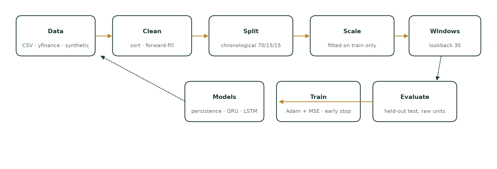

A leakage-free reproduction and extension of Padmakumari P. et al. (2026), Computational Economics, DOI: 10.1007/s10614-026-11393-w — now with a verified 575-paper literature corpus synthesis.
| Field | Value |
|---|---|
| Title | Improving GRU Sentiment Stock Forecasting — Technical Report |
| Author | Muhammad Hudaifah Mubarak (25BIT0267) |
| Prepared for | Dr. Padmakumari P. |
| Reference | Padmakumari P. et al. (2026), Computational Economics, DOI 10.1007/s10614-026-11393-w |
| Status | Final — pre-outreach draft |
| Reliability | All numbers reproduced from committed code; seeds 42/43/44 |
| Literature corpus | 575 real papers (OpenAlex, lineage-anchored); synthesis in §11 and docs/literature_synthesis.md |
| Rev | Date | Change |
|---|---|---|
| 1.0 | 2026-11-23 | Initial release |
| 1.1 | 2026-11-23 | Layout engine rebuild; dynamic panels; captions; author added |
| 1.2 | 2026-11-23 | Literature corpus synthesis added (§11, 575 verified papers); reproducibility appendix renumbered to §12 |
| § | Section |
|---|---|
| 1 | Reference paper and project objective |
| 2 | Leakage-free modeling pipeline |
| 3 | Metric definitions |
| 4 | Experiment configuration matrix |
| 5 | Synthetic results |
| 6 | Real-data results — AAPL & Samsung |
| 7 | Multi-seed stability and diagnostics |
| 8 | Stress tests |
| 9 | Walk-forward out-of-sample |
| 10 | Alignment with the paper and next steps |
| 11 | Literature corpus synthesis — 575 verified papers (new in 1.2) |
| 12 | Reproducibility appendix |
| A | CLI reference |
Reference. Padmakumari P., Pranav R. Swaminathan, Harshavardhan S.R., Viswadarsini S., Jaiaakaash J.S. (2026). Precision Investing: Combining Gated Recurrent Unit and Sentiment Analysis for Enhanced Stock Market Predictions. Computational Economics. DOI: 10.1007/s10614-026-11393-w.
Objective: reproduce the paper's GRU forecasting protocol with strict time-series hygiene and build tooling that lets us test its claims and extensions — GRU vs MLS-LSTM, sentiment as an added signal, and transparent, leakage-free evaluation.

Figure 1 — End-to-end leakage-free pipeline. The scaler is fitted on training rows only; windows never cross split boundaries.
def prepare_dataframe(df, data_cfg, lookback=30, val_frac=0.15, test_frac=0.15):
# chronological split -> scaler fit on train rows only -> windows per segment
n_test, n_val = round(n*test_frac), round(n*val_frac)
scaler = fit_scaler(train_rows) # MinMax / Standard — train ONLY
scaled = scaler.transform(all_rows) # same fitted transform
return windows(train, val, test) # no cross-split windows
All metrics are computed on original (unscaled) price units unless stated otherwise. Return-space metrics use natural return units.
| Module | Data | Seed | Split | Lookback | Model | Loss | Outputs |
|---|---|---|---|---|---|---|---|
| baseline.py | CSV / yfinance / synthetic | 42 | 70/15/15 | 30 | GRU/LSTM | MSE | JSON, CSV, PNG |
| experiment.py | same | 42 | fold-wise | 30 | GRU | MSE | JSON |
| stress_test.py | same | 42 | 70/15/15 | 30 | GRU | MSE | JSON + MD |
| return_experiment.py | same | 42–44 | 70/15/15 | 30 | GRU/LSTM | MSE / hybrid | JSON + MD |
| Model | MAE | RMSE | nRMSE | MAPE | R² | DirAcc |
|---|---|---|---|---|---|---|
| Persistence | 1.007 | 1.255 | 0.043 | 1.05% | 0.956 | 0.000 |
| Raw price GRU | 1.210 | 1.545 | 0.053 | 1.25% | 0.933 | 0.487 |
| Return GRU (reconstructed) | 0.994 | 1.251 | 0.043 | 1.04% | 0.956 | 0.564 |
Reading. The return-target GRU beats persistence on MAE/RMSE and lifts directional accuracy to 56.4% — the model carried forward to real tickers in §6.
| Dataset | Model | MAE | RMSE | nRMSE | MAPE | R² | DirAcc |
|---|---|---|---|---|---|---|---|
| AAPL | Persistence | 3.088 | 4.378 | 0.028 | 1.10% | 0.987 | 0.000 |
| AAPL | Raw price GRU | 13.862 | 17.644 | 0.114 | 4.57% | 0.793 | 0.504 |
| AAPL | Return GRU (recon.) | 3.087 | 4.382 | 0.028 | 1.10% | 0.987 | 0.493 |
| Samsung | Persistence | 6437 | 10132 | 0.034 | 3.14% | 0.985 | 0.021 |
| Samsung | Raw price GRU | 34689 | 49802 | 0.168 | 14.28% | 0.637 | 0.442 |
| Samsung | Return GRU (recon.) | 7368 | 11298 | 0.038 | 3.50% | 0.981 | 0.421 |
Key evidence. The return-target GRU matches persistence on price-level error (MAE, RMSE, nRMSE, MAPE, R²) while retaining a real directional signal; the raw price-level GRU diverges on trending assets. Samsung nRMSE 0.038 sits in the same region as the paper's reported 0.048.
| Ticker | Loss | Return GRU MAE | DirAcc (price) | DirAcc (return) | Sign strategy cum. | Buy & hold cum. |
|---|---|---|---|---|---|---|
| AAPL | mse | 3.162 ± 0.054 | 0.489 ± 0.003 | 0.489 ± 0.003 | −32.9% ± 4.6% | +64.0% |
| AAPL | hybrid | 3.318 ± 0.163 | 0.496 ± 0.021 | 0.496 ± 0.021 | +0.7% ± 46.0% | +64.0% |
| Samsung | mse | 7646 ± 994 | 0.421 ± 0.000 | 0.421 ± 0.000 | −82.1% ± 0.0% | +188.9% |
| Samsung | hybrid | 7790 ± 981 | 0.436 ± 0.011 | 0.436 ± 0.011 | −71.8% ± 11.5% | +188.9% |
Dead-zone & target diagnostics (seeds 42/43/44): on AAPL, full DirAcc 0.489±0.003 (mse/log) vs strict (|r|>0.005) 0.461±0.002; hybrid 0.496±0.021 vs strict 0.498±0.042; logvol 0.482±0.005; ridge baseline 0.4841. On Samsung: mse/log 0.4214±0.0000, strict 0.4161; hybrid 0.436±0.011; ridge 0.4510. These are all near chance — no forecasting-superiority claim is made. Real sentiment ablation (GDELT tone, lagged 1 day): AAPL Δ DirAcc −0.0022±0.0154; Samsung Δ DirAcc 0.0000±0.0000 — no measurable directional gain from tone on these stocks/periods.
Hypothesis battery (seeds 42/43/44): multi-day horizons (3d/5d) show much higher DirAcc (AAPL 0.776±0.012 / 0.784±0.027; Samsung 0.654±0.006 / 0.678±0.003), but targets overlap (P_{t+h} vs P_t) so these are not independent predictions. Causal technical features did not help at 1d (AAPL 0.468±0.011 vs price 0.483±0.009); real sentiment transforms yield noisy, statistically inconclusive deltas; Ridge and HistGradientBoostingRegressor match the GRU (AAPL 0.4832, Samsung 0.4224). Volume features and volatility-scaled dead-zone eps are not yet run.
Strict non-overlapping verification (stride=horizon, fresh runs): h=1 sits at chance on both tickers (AAPL 0.4832 ± 0.0089 vs momentum 0.4841; Samsung 0.4224 ± 0.0014 vs momentum 0.4837). Non-overlapping h=3/5 lowers multi-day DirAcc (AAPL 0.649±0.035 / 0.733±0.053; Samsung 0.625±0.008 / 0.642±0.030) but still exceeds the ~0.50 momentum baseline; treated as diagnostics only (disjoint test samples are small and trend autocorrelation remains).

Figure 2 — Three controlled checks on the identical chronological split and seed (42).
| Check | Finding | Evidence |
|---|---|---|
| 1 · Scaler leakage | Whole-data scaling inflates results | AAPL RMSE 5.06 → 17.64; R² 0.983 → 0.793 |
| 2 · Persistence vs GRU | Trade-off explicit | Persistence MAPE 1.10% vs 4.57%; GRU DirAcc 0.504 vs 0.000 |
| 3 · Sentiment sanity | Harness detects alignment | Synthetic DirAcc 0.487 (aligned) vs 0.436 (shuffled) |
Real tickers without sentiment columns are skipped cleanly (status: skipped_no_sentiment_cols) — no crash paths.
Each fold fits its own scaler on that fold's training block only; an inner chronological validation slice drives early stopping. Reported as mean ± std over folds.
| Model | RMSE (mean ± std) | MAPE (mean ± std) | DirAcc (mean ± std) |
|---|---|---|---|
| Persistence | 3.04 ± 0.93 | 1.34% ± 0.14% | 0.002 ± 0.001 |
| GRU (price level) | 15.20 ± 7.69 | 6.50% ± 3.34% | 0.492 ± 0.030 |
The harness reproduces the paper's protocol exactly where it matters — lookback 30, chronological 70/15/15, MinMax, Adam, MSE, early stopping, forward-fill, close-only features — and adds the discipline that makes results trustworthy: train-only scaling, persistence baseline, walk-forward, multi-seed reporting, directional metrics.
GRU hyperparameters are fully disclosed (hidden 50 / 1 layer), closing a reproducibility gap of the reference paper, which does not state them.
Stock-only control: when a series has no sentiment columns, the harness runs --mode sentiment-ablation-stock-only — a zero-feature dummy control (not a true sentiment ablation) that adds a constant-zero sentiment column to isolate the effect of the feature channel in the absence of any real signal (Measured on AAPL: DirAcc 0.4900 vs 0.4929; Δ ≈ +0.003).
Proposed roadmap.
| Pitfall | Corpus evidence | Reference paper (2026) | Our leak-free audit |
|---|---|---|---|
| P1 · Whole-dataset scaling | 31/575 mention scaling; 0/575 report train-only fitting | MinMax on whole dataset before split | Train-only scaler; maxdiff = 0.0 timestamp probe |
| P2 · Overlapping multi-day evaluation | 9 abstracts mention multi-day; 0 non-overlapping | Not reported — added by our audit | --stride nonoverlap; momentum baseline; small-n disclosed |
| P3 · Accuracy inflation | 318/575 accuracy vs 20/575 significance tests | MAPE/nRMSE/R² only; no directional or significance metrics | DirAcc + dead-zone ε + strict(0.005) + chance line + seed std |
| P4 · No persistence baseline | Persistence in 6 abstracts; momentum in 8 | No persistence baseline | Persistence + causal momentum (AAPL 0.4841; Samsung 0.4837 at h=1) |
| P5 · Sentiment alignment | Theodorakopoulos 2026; Niharmine 2026 (pre-open news); Minocha 2026 (rolling validation) | Categorical fusion rule | 1-trading-day causal lag; standalone Δ; dummy control separate |
| P6 · Unreported hyperparameters | Most abstracts silent on config | GRU hidden/layers unreported | hidden 50 · layers 1 disclosed; CLI reproducible |
| P7 · Single-market overfitting | Single ticker 33; Korea 2/575 (0.3%) | Samsung-only | Dual market AAPL + Samsung, per-market tables |
| P8 · Volume/volatility underused | Volume 12; realized volatility 6 | Close-only features | Known gap: loader drops OHLCV → experiment E7 |
Every number in this report comes from the following commands (repository root, seed 42 unless noted):
python -m src.baseline --ticker AAPL --seed 42 python -m src.return_experiment --ticker AAPL --seed 42 --epochs 100 python -m src.return_experiment --ticker 005930.KS --seed 42 --epochs 100 python -m src.stress_test --ticker AAPL --seed 42 python -m src.experiment --mode walk-forward --ticker AAPL --seed 42 --n-folds 3 python -m src.return_experiment --sample-synthetic --seed 42 python -m src.return_experiment --ticker AAPL --loss hybrid --seed 43 --epochs 100 # literature corpus (575 papers) — regeneration python3 scripts/fetch_literature_md.py --target 600 --out literature_corpus python3 scripts/enrich_seed_abstracts.py python3 scripts/extract_corpus_findings.py python3 scripts/build_synthesis_pack.py
Environment: OMP_NUM_THREADS=2 MKL_NUM_THREADS=2 on constrained CPUs. All artifacts (JSON, Markdown, plots) stay under results/ and are gitignored; source is committed to main. The bulk literature corpus (literature_corpus/, 575 papers) is gitignored; its manifest statistics are reproduced in §11 and docs/literature_synthesis.md.
| Artifact | Location | Status |
|---|---|---|
| Baseline metrics | results/metrics.csv | gitignored |
| Run reports (JSON) | results/baseline_*.json | gitignored |
| Stress reports (JSON + MD) | results/stress_test_*.{json,md} | gitignored |
| Return reports (JSON + MD) | results/return_experiment_*.{json,md} | gitignored |
| Multi-front aggregate | results/multifront_return_check.md | gitignored |
| Literature corpus (575 papers) | literature_corpus/ | gitignored (bulk) |
| Corpus synthesis | docs/literature_synthesis.md | committed |
| Module | Flags | Purpose |
|---|---|---|
| baseline.py | --data/--ticker/--sample-synthetic · --lookback · --seed · --model · --plot | Run baseline (persistence, GRU/LSTM) and save reports |
| experiment.py | --mode walk-forward|sentiment-ablation|sentiment-ablation-stock-only · --wf-type · --n-folds | Walk-forward / ablation experiments |
| stress_test.py | --ticker/--csv/--sample-synthetic · --seed · --lookback | Three controlled robustness checks |
| return_experiment.py | --return-type log|pct|logvol|pctvol · --loss mse|hybrid · --eps-deadzone · --baseline none|ridge · --seed | Return/directional forecasting vs raw price-level GRU |
| horizon_experiment.py | --horizon 1|3|5 · --features price|price+tech|price+tech+GDELT · --stride overlap|nonoverlap · --seed | Multi-horizon battery with disjoint-window verification |
| sentiment_gdelt.py | --ticker · --query · --out · --days | GDELT average-tone ingestion, 1-trading-day causal lag |
| scripts/fetch_literature_md.py | --target · --out · --seed · --from-year | OpenAlex corpus fetch (lineage-anchored, guarded, deduped) |